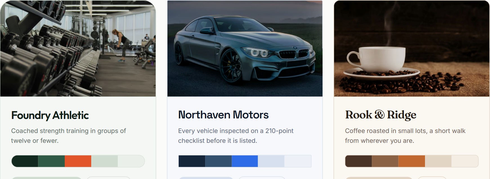

One codebase serving many separately branded consumer front-ends — adding a new client brand is a database row, not a copy of the project.

The three storefronts on the live site — different photography, typefaces, palettes and page structures, with no per-brand code between them.
All three storefronts above are the same application. Each has its own colours, typefaces, layout and web addresses, and a button on screen switches between them instantly — but nothing about any individual brand is written into the code. The differences are stored in a database and applied when the page is requested, so a company running many client brands can add another without duplicating and re-maintaining the software.
All three brands are invented for this project. Photography is free-licence stock; some frames incidentally show real production vehicles. No affiliation is implied.
Product lookup across 15,036 rows, with and without a composite
index on (tenantId, slug).
| Query time in database | Without | With |
|---|---|---|
| 50th percentile | 0.782 ms | 0.041 ms |
| 95th percentile | 1.001 ms | 0.048 ms |
19× faster at the 50th percentile — the query plan changes from
scanning and discarding 5,011 rows to a direct index lookup. Measured, not estimated:
350 timed runs plus 120 EXPLAIN ANALYZE samples. Full output in the repo.
One brand's page can never render another brand's data, and one brand's item address returns "not found" under a different brand. Both are enforced by the database schema, and both are checked automatically on every run.
Shipping high-craft branded experiences for many different clients out of one team is a real engineering problem, and the tempting solution — fork the codebase per client — is the one that hurts two years later. I wanted to build the version that does not fork. I built it in one evening for this conversation, and I would rather show something narrow and finished, with numbers I measured, than something broad and half-working.